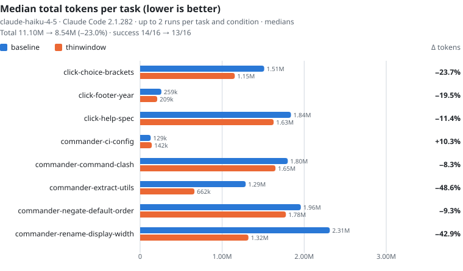

ThinWindow
Less in the window. Less on the bill. Most of your agent's tokens are re-reads: 87–96% is context re-sent every turn. ThinWindow is both a Claude Code plugin and an Agent Skill, and it shrinks that context: 13–23% fewer tokens, measured in Claude Code on three models.
01Overview
ThinWindow is a small, local layer that sits between a coding agent and its tools. It keeps what the agent does not need out of the context window: whole-file reads of large files, re-reads of files already in context, thousands of lines of install and test logs, unbounded searches and listings.
It has three parts:
Rules any agent
A short set of reading, printing, writing and answering rules, loaded into the agent's context at session start. Under 2,000 characters, enforced in CI.
Hooks Claude Code
Checks that run on each Read, Bash and Grep call before the result reaches the context, and shrink or redirect the wasteful ones.
thinwindow-run CLI
Runs a noisy command, keeps the full log in a temp file, and prints only the exit code, the tail and the error lines.
Who it is for: people who use coding agents on real repositories and pay for them, in money or in subscription usage limits, and want the same work done while the agent carries less.
What it is not: a model, a proxy, or a service. Nothing is hosted, nothing is sent anywhere, and it has no runtime dependencies. It removes waste; it does not make an agent smarter.
02Why context is the bill
A coding agent does not pay mostly for what it writes. It pays for what it carries. Every file it opens, every log it prints and every wide search it runs is appended to the conversation, and the whole conversation is sent again on every later turn. So the cost of a session is much closer to
than to the length of the answer. In the benchmark runs, roughly 87% to 96% of all tokens billed were cache reads: context being re-sent, turn after turn. The agent's own output was under 2%.
That is the whole idea. Telling an agent to be brief touches the ~1% column. Stopping it from pulling a 2,000-line file into context on turn 3 touches the ~90% one, on every turn that follows.
ThinWindow therefore works on both factors: it shrinks what enters the context, and it avoids the extra turns an agent spends recovering from output it never needed. A denial also costs a turn, which is why the hooks prefer to fix a call in place rather than refuse it.
03How it works
The rules tell the agent what to do. The hooks make sure the expensive part actually happens, because a rule the agent can forget under pressure is not a rule. The hooks run on the tool call itself, before its result reaches the context, so enforcing them costs no extra turn.
The workflow of one tool call
Session start
The SessionStart hook adds the rules to the agent's context. After a compaction or /clear, it also forgets which files were read, because that content is gone from the context.
The agent decides on a tool call
A Read of a file, a Bash command, or a Grep search.
ThinWindow's PreToolUse hook inspects it
Locally, in a Node script, with no network access. It ends in one of three outcomes:
The result enters the context
Smaller than it would have been, and therefore cheaper on every turn that follows.
Design principles
- Fails open. If a hook errors for any reason, the tool call proceeds. ThinWindow must never block someone's work because of its own bug.
- Can't get stuck. Repeating a refused
Read, or a refused noisy or unbounded command, within ten minutes lets it through. The commands that are always refused (such ascatof a lockfile) come with a cheaper replacement that works. - Never approves anything. ThinWindow never returns an
allowdecision, so it can't approve a call your permission settings would have prompted for. A rewritten command still goes through your normal permission rules. - Its own footprint is budgeted. The always-loaded rules must stay under 2,000 characters (about 500 tokens); CI fails otherwise. The current rules are 1,439 characters.
- Never phones home. No telemetry, no analytics, no update or license checks.
- Easy to turn off.
THINWINDOW=off, or"enabled": falsein the config file.
04The rules
This is the complete text loaded into the agent's context, from rules/thinwindow.md. The same block is copied into the Agent Skill and the AGENTS.md snippet by scripts/sync-rules.mjs, and CI checks that the copies stay in sync.
# thinwindow: spend fewer tokens
Everything you read stays in context and is re-sent on every later turn, so most of the cost is reading. Read only what the task needs, then write and say only what it needs.
Read less
- Locate before reading: grep or glob for the symbol, then read only the range around it.
- Don't read whole files over ~300 lines. Don't re-read what is already in context unless it changed.
- Batch independent lookups into one call. Stop exploring once you have enough to act.
- To count, search or summarize across many files, run one command that prints only the answer.
- Don't send a subagent to explore what one grep answers.
Print less
- Cap command output: quiet flags, `| tail -n 40`, `--max-count`, or `thinwindow-run <cmd>` for installs, builds and tests.
- Summaries first: `git diff --stat`, `git log -n 10 --oneline`.
Write less
- Before adding code, check that it needs to exist, that the codebase doesn't have it already, and that the standard library or platform doesn't do it. Then make the smallest change that works.
- Never cut validation, error handling, security or tests to save lines.
- Don't add comments or docstrings that restate the code.
Say less
- Don't narrate between tool calls; just make the next call.
- End with at most three lines: what changed and where. No preamble, no restating the task, no step-by-step recap unless asked.
- Cite `file:line` instead of pasting code back."Read less" and "Print less" target the large, repeatedly re-sent part of the bill. "Write less" and "Say less" target output, the small part. The rules are tuned against the benchmark: a proposed rule is kept only if it measurably helps, and an attempt to add explicit "use fewer turns" rules was reverted after it made Sonnet 5 worse.
05Hooks reference
The hooks are part of the Claude Code plugin, and they're what does most of the work. Every threshold below is configurable; see Configuration.
SessionStart
On startup, resume, clear, compact and fork: adds rules/thinwindow.md to the context. On compact and clear, it also resets read tracking.
PreToolUse · Read
| Guard | When | What happens |
|---|---|---|
| Large file | No offset/limit, and the file has more than 400 lines | The Read returns the first 120 lines plus a line-numbered outline of the file's classes, functions and headings, so the next read can target a range. With "rewrite": false, it is refused with the line count and a grep-plus-range suggestion. |
| Re-read | Same file and range, read earlier by the same agent, with the same mtime and size | Refused as "already in context". The main conversation and each subagent are tracked separately. |
| Soft block | The exact refused call is repeated within ten minutes | Goes through. |
Images, PDFs, notebooks, binary files and missing paths are left alone. Ranged reads count for Claude Code's read-before-edit check.
PreToolUse · Bash
| Category | Examples | What happens |
|---|---|---|
| Noisy commands | install, build, test and lint for npm, pnpm, yarn, bun, pip, uv, poetry, pytest, cargo, go, gradle, maven, dotnet, make and more | Run through thinwindow-run automatically, unless already capped by a pipe, a redirect, a quiet flag or thinwindow-run. Background commands are left alone. With "rewrite": false, a soft block. |
| Unbounded scope | Recursive grep/rg/ag over the whole tree with no cap or exclude; a bare git diff | Fixed in place: the search is limited to its first 100 lines (grep also skips node_modules, .git, dist, build), and git diff runs as git diff --stat. With "rewrite": false, a soft block. |
| Anti-patterns | cat (or bat, less, more, nl, tac) of a big, lock, minified or binary file; git log without -n, a range or --since; ls -R; tree without -L; find from the repo root without -maxdepth | Refused, with a cheaper replacement. Output piped into head, tail, grep, wc and similar, or redirected to a file, counts as capped and is not blocked. |
PreToolUse · Grep
A content search (output_mode: "content") with no head_limit gets head_limit: 100. File-list and count searches are left alone.
thinwindow-run
Runs a command and keeps its full stdout and stderr in a log under the OS temp directory, never inside your repository. It prints the exit code and duration, then:
- on success, the last 10 lines;
- on failure, the last 40 lines plus earlier error-like lines (error, fail, warn, panic, exception), deduplicated;
- and the path of the full log, so the agent can read exactly the part it needs.
The command's exit code is preserved.
State and logs
Read tracking lives in one JSON file per session in <os temp dir>/thinwindow/state/; thinwindow-run logs go to <os temp dir>/thinwindow/logs/. Both are cleaned up after a week. Nothing is written inside your repository, and nothing is sent anywhere.
06Examples
What the agent asks for, and what it gets with ThinWindow installed. All of these are default behaviours of the Claude Code plugin.
thinwindow-run npm test. If the tests pass, the agent sees the exit code, the duration and 10 lines. If they fail, it sees the last 40 lines, the error lines, and where the full log is.node_modules, .git, dist and build.git diff --stat; the agent can then diff the one path it cares about.Typical use
The benchmark tasks show the kind of everyday work where this matters: fixing a bug that has a failing test, adding a small feature with tests, renaming a method across files and typings, moving helpers into a new module, answering a question from a repository's configuration, and "make the footer copyright year update automatically". The last one is the origin of the project: an agent that burned a large share of a plan's budget on a one-line change.
07Install
Claude Code: rules and hooks
The full version. The repository is its own plugin marketplace.
/plugin marketplace add thinwindow/thinwindow
/plugin install thinwindow@thinwindowAny agent with Agent Skills: rules only
Codex, Cursor, Copilot, Gemini CLI, OpenCode and other agents that support the Agent Skills standard. The skill also bundles thinwindow-run.
npx skills add thinwindow/thinwindowAgents that read AGENTS.md: rules only
Paste adapters/AGENTS.md into your project's AGENTS.md, or into whichever instructions file your agent loads.
They depend on Claude Code's tool-call hook API. Other agents get the rules, which the agent may or may not follow. Enforcement for other agents' hook systems is open to contributions.
Turning it off
Set THINWINDOW=off in the environment, or "enabled": false in .thinwindow.json. With it off, thinwindow-run runs commands with their output untouched.
Requirements: Node.js 18 or newer. No other dependencies.
08Configuration
ThinWindow works without configuration. To change it, create .thinwindow.json in the project root or ~/.thinwindow.json in your home directory. Project values override home values; lists from both files are combined.
{
"enabled": true,
"maxReadLines": 400,
"rewrite": true,
"noisyCommands": ["^just (build|test)\\b"],
"allowlist": {
"paths": ["docs/**", "*.lock"],
"commands": ["^make lint$"]
}
}| Key | Default | Effect |
|---|---|---|
enabled | true | false turns every hook off for that project, or everywhere in ~/.thinwindow.json. |
maxReadLines | 400 | Line count above which a whole-file Read is shortened, and cat of the file is refused. |
rewrite | true | Fix wasteful calls in place. false refuses them instead, as a soft block, at the cost of a turn each. |
noisyCommands | built-in list | Extra regular expressions for noisy commands, added to the built-in list. |
allowlist.paths | [] | Globs for files ThinWindow never blocks. |
allowlist.commands | [] | Regular expressions for Bash commands ThinWindow never blocks. |
A missing, unreadable or mistyped file is ignored, and a key with the wrong type keeps its default.
Environment variables
| Variable | Effect |
|---|---|
THINWINDOW=off | Turns ThinWindow off, whatever the config files say. |
THINWINDOW_DEBUG=1 | The hooks write each decision to stderr, which Claude Code keeps in its debug log (claude --debug). |
The complete reference is docs/configuration.md in the repository.
09Benchmark
Every number on this page comes from the raw run files in bench/results/, through bench/report.mjs and bench/docs.mjs. None is typed by hand, and CI fails if any of them drifts.
Current results
| Model | Tokens | Cost | Turns | Success baseline → ThinWindow | Runs |
|---|---|---|---|---|---|
| Opus 5.5 | −15.8% | −19.4% | 77.5 → 67.5 | 16/16 → 16/16 | 32 |
| Sonnet 5 | −13.2% | −7.9% | 62 → 62 | 24/24 → 24/24 | 48 |
| Haiku 4.5 | −23.0% | −20.2% | 230.5 → 220.5 | 14/16 → 13/16 | 32 |
Same 8 tasks, 112 runs, one agent per run. Claude Code 2.1.282, 2026-09-25 to 2026-09-26. ThinWindow 0.1.0 (a6ebe93) on Opus 5.5; 0.2.0 (30e9c6b), 0.1.0 (528598a) on Sonnet 5; 0.1.0 (05cc89d), 0.1.0 (a6ebe93) on Haiku 4.5. Tokens and cost are the sum of the per-task medians; turns are the sum of per-task median top-level turns; success counts every run.
They're a current measurement, not a ceiling. The project's own launch target is at least 25% fewer total tokens at an equal success rate, and no model has reached it yet. The results will be re-measured, and the raw files re-published, as the rules, the models and Claude Code change.
Per-task change
Bars left of zero are tokens saved with ThinWindow; bars to the right are tokens lost. Not every task improves.

The per-task tables, with medians and min–max ranges, are in bench/results/report.md and in the README.
How a run is measured
- Clone a real open-source repository (pallets/click, Python, or tj/commander.js, Node) at a pinned commit, into a fresh temporary directory. The remote is removed, so the agent can't read later history.
- Install its dependencies before the agent starts, so install logs are billed to neither side.
- Run Claude Code headless (
claude -p) with the chosen model, capped at 40 turns, inside Claude Code's sandbox. The baseline gets plain Claude Code withTHINWINDOW=off; the ThinWindow condition gets the same plus the plugin. No user settings, no MCP servers, no memory carried between runs. - Run the task's hidden check, a test or script the agent never sees. Exit code 0 is a success.
- Record input, cache-write, cache-read and output tokens (subagents included), cost, turns, wall time and the tool-call trace, as one JSON line.
Runs are sequential and interleaved, alternating which condition goes first, so neither side always runs first or competes for rate limits.
The tasks
| Task | Kind |
|---|---|
commander-negate-default-order | Bug fix |
commander-command-clash | Small feature + tests |
commander-rename-display-width | Cross-file rename, including typings |
commander-extract-utils | Refactor into a new module |
commander-ci-config | Config lookup, written to an answer file |
click-choice-brackets | Bug fix |
click-help-spec | Small feature + tests |
click-footer-year | "Make the footer copyright year update automatically" |
bench/validate-tasks.mjs proves each task is fair without running an agent: in a fresh clone its check must fail, and after applying the reference solution it must pass.
How to read the numbers
- Tokens are input + cache writes + cache reads + output, summed over every model a run used. Per task, the table reports the median over all runs, failures included, with the min–max spread.
- Cost is Claude Code's own estimate (
total_cost_usd), not a bill. On a subscription you pay in usage limits instead, but the ratio is the same. - Turns count the top-level agent loop only. Work delegated to a subagent is included in tokens and cost but not in turns, so tokens and cost are the fair comparison.
- The rules and thresholds were tuned on these same tasks. Savings on other work will differ.
- One task was re-measured after a fix. On Sonnet 5, every ThinWindow run of
commander-ci-configcappedcat .github/workflows/*.ymlat 60 lines and cut the file the task asks about; the hook now keeps short concatenations whole (#7). That task's three ThinWindow runs were re-run at 30e9c6b (+29.3% → +3.9%), and the three they replace are inbench/results/archive/. No other recorded run makes that call, so no other task was re-run.
Where the remaining headroom is
- Not every task improves. On Sonnet 5, three of the eight tasks cost more with ThinWindow. Just neutralising those regressions, without saving a token anywhere else, would take Sonnet 5 from −13.2% to about −17.5%, and Opus 5.5 from −15.8% to about −17.7%. Most of the near-term headroom is in not making short tasks worse.
- Turns are the untapped factor. Opus 5.5 took 12.9% fewer turns and cut cost by 19.4%; Sonnet 5 took as many turns as without it and cut cost by 7.9%. An earlier attempt at explicit "use fewer turns" rules made Sonnet measurably worse, and it was reverted rather than kept and quietly excluded. That experiment is still in the history.
Re-run it yourself
node bench/run.mjs --condition baseline,thinwindow --reps 3 --model sonnet --dry-run
node bench/run.mjs --condition baseline,thinwindow --reps 3 --model sonnet --max-cost 10
node bench/report.mjs--dry-run clones nothing and prints the plan and a cost estimate. --max-cost stops before the next run once the spend passes the limit. Runs need Claude Code with its sandbox, git, Node.js 22.12+, Python 3.10+ and network access to GitHub, npm and PyPI; on Windows, use WSL2. Every option is in bench/README.md.
10Limitations and disclaimer
ThinWindow started as a personal tool, built to make one person's workflow cheaper, and published because the measurements might be useful to someone else. It is not a finished product with a support contract behind it.
- The benchmark is narrow and self-selected. Eight tasks, two repositories, three models, a few repetitions each, with rules tuned on those same tasks. That's enough to show a direction, not to promise you a percentage. It is published in full, raw files included, so you can judge how well it generalises.
- Token accounting is volatile. What lands in a context window depends on the model version, the agent harness and its system prompt, cache hit rates, enabled tools, MCP servers, repository size, and how the task happens to unfold. Any of these can move the result by more than the effect measured here, and two identical runs can differ substantially.
- The results will age. They were measured with one Claude Code version and specific model snapshots, both of which change often.
- Hooks are Claude Code only. Other agents get the rules, not the enforcement.
- It is not a substitute for a good prompt. It removes waste; it doesn't make an agent smarter.
- No warranty. The software is provided "as is" under the MIT License, without warranty of any kind. You are responsible for what runs in your environment and for what you spend. The hooks are designed to fail open, and the test suite covers that, but no amount of testing is a guarantee. Review the code, run the tests, and try it on a branch before trusting it with real work.
11Project status
| Version | 0.2.0, the first measured release. 0.1.0 was the first complete build, without benchmark results. The benchmark runs record the plugin version as 0.1.0, because the manifest was bumped only at release; each run's commit hash identifies the exact code. |
| Built | Rules, Agent Skill, AGENTS.md snippet, Claude Code plugin with SessionStart, Read, Bash and Grep hooks, thinwindow-run, configuration, tests and CI on macOS, Linux and Windows (Node 18 and 22). |
| Measured | Three models, 112 runs, as above. The launch target (≥25% fewer tokens at equal success) is not met yet. |
| In progress | Removing the regressions on short tasks, and reducing turns without hurting success. |
| Out of scope for v0.1 | An npm package, a hosted service, and telemetry of any kind. |
12Repository
| Path | Contents |
|---|---|
rules/thinwindow.md | The rules: the single source of truth for the behaviour. |
skills/thinwindow/ | The Agent Skill, with a bundled thinwindow-run. |
.claude-plugin/, hooks/ | The Claude Code plugin manifest, its marketplace entry and the hooks. |
bin/ | thinwindow-run. |
adapters/AGENTS.md | The rules as a snippet for agents that read AGENTS.md. |
bench/ | Tasks, runner, report, hidden checks, reference solutions and raw results. |
docs/ | Product spec, configuration reference and manual testing guide. |
test/, scripts/ | The test suite (node --test) and the repository checks CI runs. |
assets/, website/ | The ThinWindow logo and icon set, and this documentation site. |
Contributing
The benchmark is one person's sample, so other people's workloads are the most valuable input. Roughly in order of usefulness:
- A benchmark task from your own stack: another language, a monorepo, a framework with heavy generated code.
- A reproducible regression: a case where ThinWindow costs more than the baseline, with the run file to prove it.
- Rule and hook proposals, together with the measurement that justifies them. A new rule must come with a benchmark delta.
The workflow is in CONTRIBUTING.md. The project uses Conventional Commits and the MIT License.
13FAQ
Does it make my agent worse at the task?
That is what the success column measures; a saving that fails the task is not a saving. Across the three models, success was identical to the baseline except on one Haiku task, commander-rename-display-width: 1/2 without ThinWindow, 0/2 with it. Haiku struggles there either way: three of its four runs failed, and every run took 35 turns or more.
Why not just tell the agent to be brief?
Because output is under 2% of the bill. A long answer is paid once; a long read is paid again on every turn that follows it. ThinWindow trims output too, but that's the small half of the problem.
Does it send my code or telemetry anywhere?
No. There is no network code in the project: no analytics, crash reports, usage statistics, or license or update checks. The hooks are local Node scripts that read the tool call and return a decision, and truncated logs go to a temporary file on your own disk. This site loads no external fonts or scripts either.
Does it work outside Claude Code?
The rules do, through Agent Skills or AGENTS.md. The hooks, which do most of the work, are Claude Code only, because they depend on its tool-call hook API.
Can it block something I actually need?
It's designed not to. A refused Read or noisy command goes through when repeated, the always-refused commands come with a working replacement, paths and commands can be allowlisted, and THINWINDOW=off disables everything. If a hook itself fails, the call proceeds.